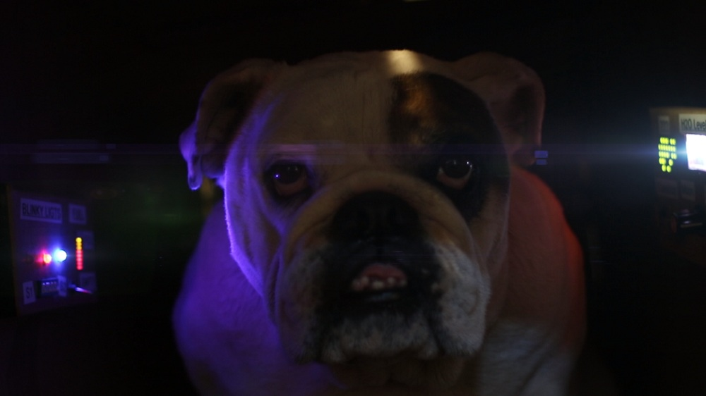
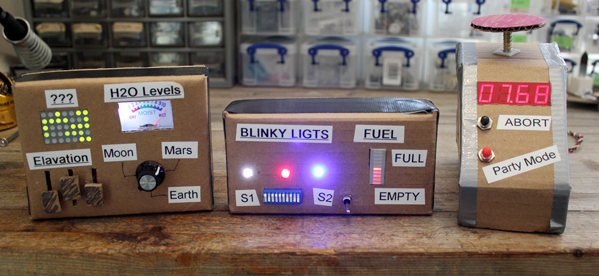
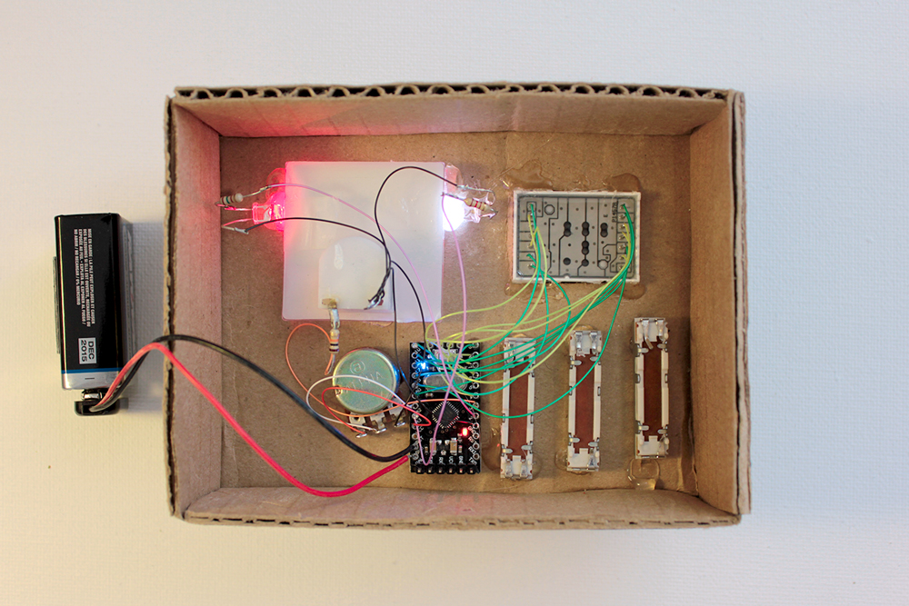
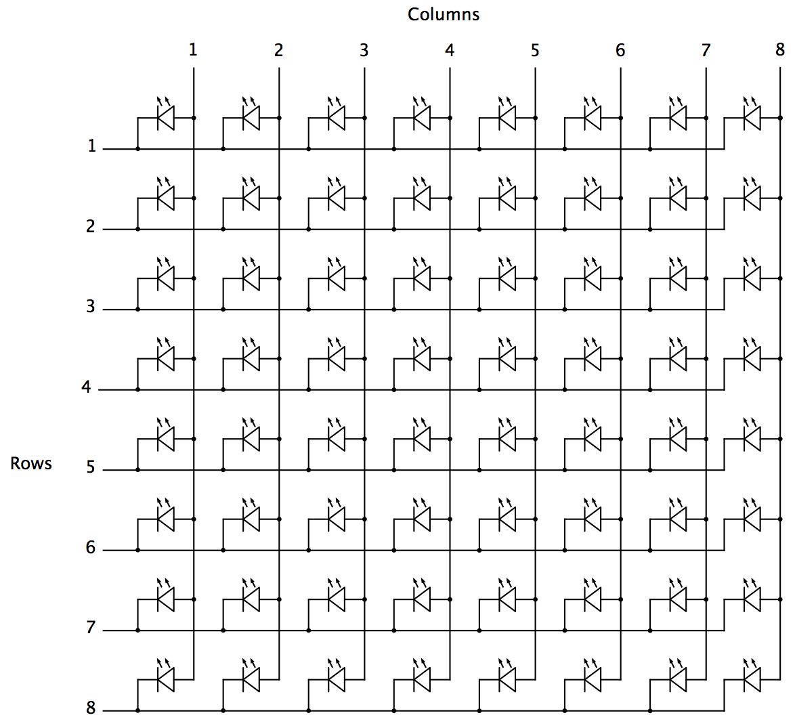
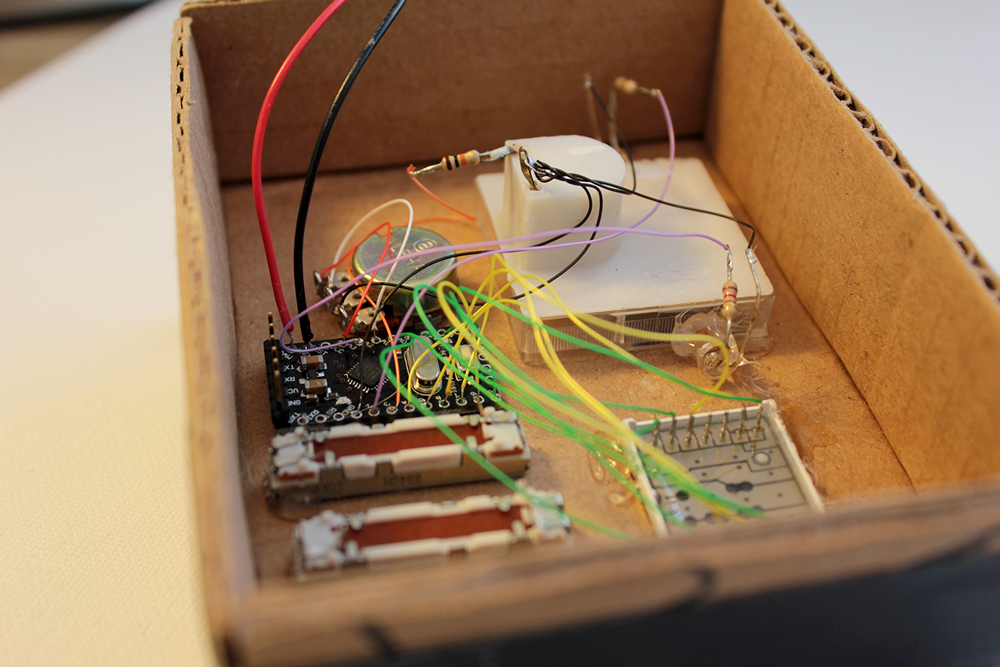
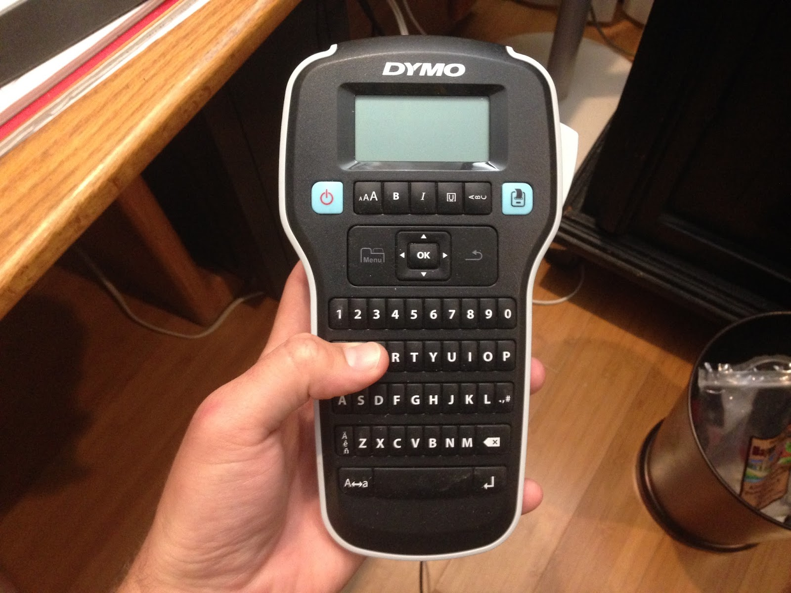
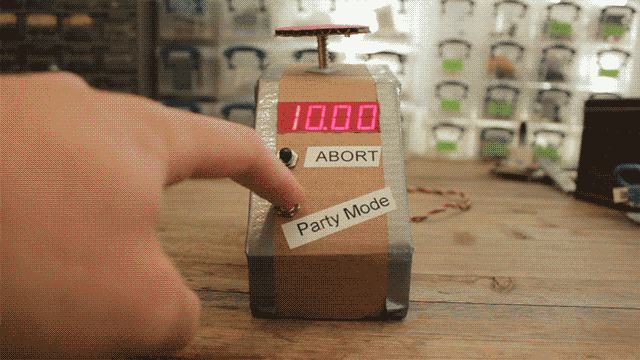
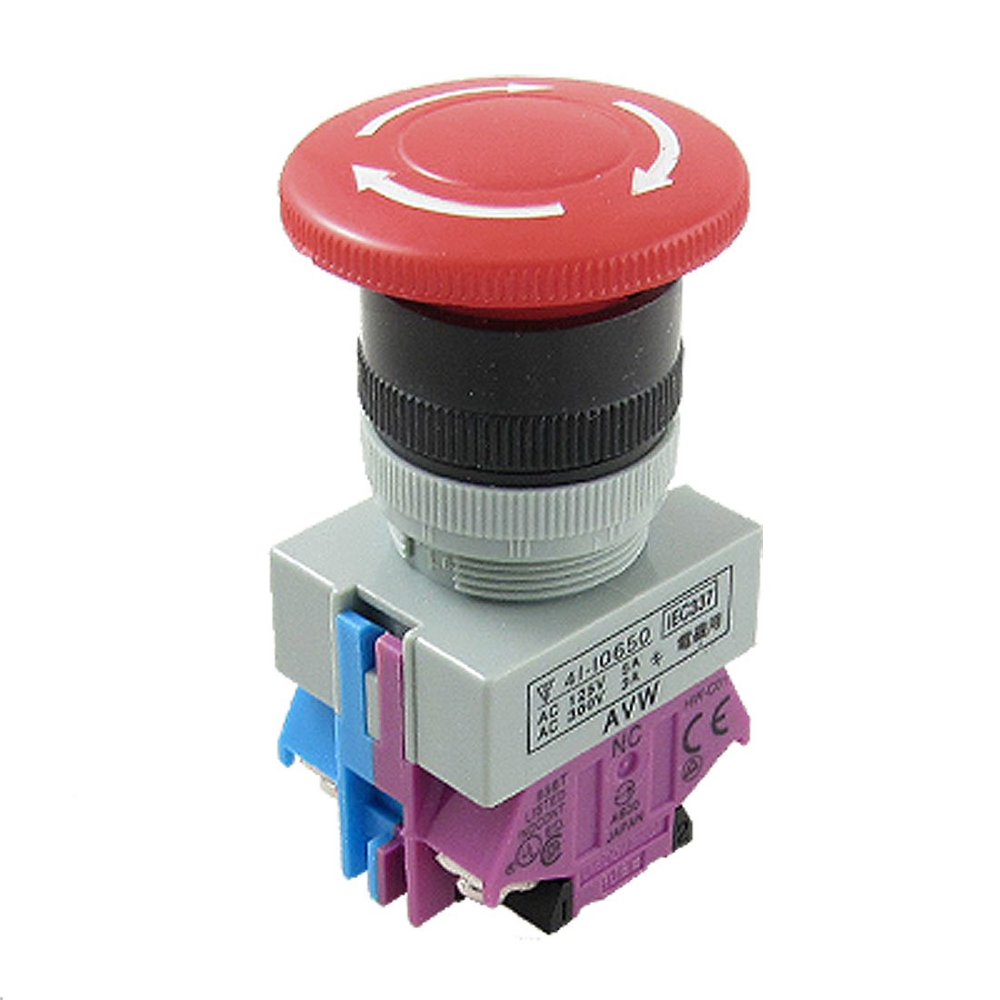

{kind=link}
CGI renders most of the effects in modern film, but still can't compete with a good practical effect. This build-log covers three Arduino powered spaceship props I built for my loosing submission to the 2016 Doritos Crash the Superbowl.
Without further ado I present my non-award winning Doritos ad. Sorry, further ado, when I say "my submission" this also includes brothers John and David Willner.
Not bad eh?
My opinion is most definitely biased, so if you feel otherwise please shut your mouth.
|  |
| Ugly sonofa bitch can see around corners with those eyes |
{kind=link}
How did I do it?
Science!!
Three props were built using Arduinos, random electronics, cardboard, duct-tape, and powered by 9v batteries. Janky construction and foregoing resistors put these props on track for a one day build!
|  |
| Only one button is functional. |
{kind=link}
I saved a butt-load of time by searching for pre-existing code online. I found an example written by Nathan Seidle which can multiplex LEDs WITHOUT resistors by very quickly pulsing 5v to the LEDs. Yeah, I don't think this is good practice either, but hey it works. The 5x8 matrix would have required 8 resistors, and the 4 digit 7-segment would require 8 resistors!
Prop 1:
Driving an LED matrix was new for me, even though I've had a couple sitting brand new in a pile of parts for a few years... The galvanometer was pulled from a moisture meter. Moisture is an important parameter of rockets.
Quick note: if the spelling of "Elavation" bothers you, remember this is supposed to be a kid's work. Or at least that's what I keep telling myself. I honestly can't remember if the misspelling was intentional or not.
Quick note: if the spelling of "Elavation" bothers you, remember this is supposed to be a kid's work. Or at least that's what I keep telling myself. I honestly can't remember if the misspelling was intentional or not.
|  |
| My favorite child |
{kind=link}
Driving the matrix requires 13 wires. You might say "OMG how the heck do you drive hella 40 LEDs with only 13 wires?". First of all, don't talk like that. Second, multiplexing. Trying to drive all 40 LEDs at once won't work, so instead we alternate driving single rows of 8 LEDs at a time. This is what an 8x8 matrix looks like:
The matrix is essential a matrix. We select a row of LEDs by connecting it to ground, and then set the columns depending on how we want that row to light up. Light up one row at a time, then turn it off and move to the next row. This happens quick enough that the human eye perceives every row being lit at the same time (persistence of vision). A high speed camera would reveal the illusion.
Populating the matrix is done by filling a 5 byte array with random numbers and associating each bit to an LED.
My favorite part of this prop is the galvanometer.
A galvanometer is essentially a needle attached to a coil of wire and a magnet. When current flows through the coil, it generates a magnetic field which reacts to the magnet and moves the needle; the more current the more the needle moves. This specific meter range is 0mA to 0.5mA. A 10k resistor inline with a 5v signal limits it to 0.5mA. Since the inertia of the needle is relatively large, we can use PWM to control the average current thus the needle position.
The needle position is changed a few times per second by writing a random PWM value. A red LED hot-glued to the galvo lights up if the random value is large enough. A white LED hot-glued to the galvo flickers like a power surge.
Honestly this prop is boring, but provides a lot of dynamic light in the video.
The colored LED brightness values are chosen randomly in four increments (0, 1/4, 1/2, 3/4, 1). I think it creates a more structured blinking.
|  |
| LED Matrix Schematic |
{kind=link}
Populating the matrix is done by filling a 5 byte array with random numbers and associating each bit to an LED.
My favorite part of this prop is the galvanometer.
|  |
| Galvanometer is the white box |
{kind=link}
The needle position is changed a few times per second by writing a random PWM value. A red LED hot-glued to the galvo lights up if the random value is large enough. A white LED hot-glued to the galvo flickers like a power surge.
The rotary potentiometer is wired to the Arduino but does nothing.
Prop 2:
 |
| My least favorite child |
I'm starting to think the spelling errors weren't intentional.
Or maybe it's my fat fingers on the label maker keyboard.
|  |
| Edward sausage hands |
{kind=link}
Yeaaahh that's it.
Honestly this prop is boring, but provides a lot of dynamic light in the video.
{kind=link}
The colored LED brightness values are chosen randomly in four increments (0, 1/4, 1/2, 3/4, 1). I think it creates a more structured blinking.
Prop 3:
|  |
| Second favorite child |
{kind=link}
Here is the countdown timer, the most functional of the three props. Its 4-digit display counts down from 10 seconds, and can be reset by pressing the "Party Mode" button. I'm sorry "Party Mode" isn't more exciting.
This 7-segment display is how I found the no-resistor multiplexing example code, so I literally did nothing but wire the circuit, and code the countdown/button functionality.
Originally I ordered a big red emergency stop button off Amazon which would have been wired to start the countdown, but shipping was horrendously botched, so I improvised with cardboard, a sharpie, and spring.
This 7-segment display is how I found the no-resistor multiplexing example code, so I literally did nothing but wire the circuit, and code the countdown/button functionality.
{kind=link}
Originally I ordered a big red emergency stop button off Amazon which would have been wired to start the countdown, but shipping was horrendously botched, so I improvised with cardboard, a sharpie, and spring.
|  |
| "Two day shipping" they said.... |
{kind=link}
The End
That's it.
I need a job.
I need a job.
Add a comment